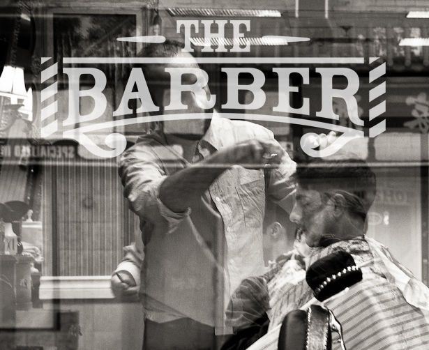

Barber shop árak Budapesten – általános áttekintés
A budapesti barber shop árak széles skálán mozognak – az egyszerűbb, gyorsabb szalonoktól a prémium barber shopokig jelentős különbségek lehetnek. Ez nem véletlen: az ár tükrözi a borbély tapasztalatát, a szalon minőségét, a felhasznált termékeket és azt is, hogy mennyi időt és figyelmet fordítanak rád.
Általánosságban elmondható, hogy Budapesten 2026-ban egy alapszintű férfi hajvágás 4 000–6 000 forint között mozog egy hagyományos fodrászatnál. Egy prémium barber shopban, ahol konzultációval, precíz fade technikával és minőségi termékekkel dolgoznak, az árak jellemzően 7 000–14 000 forint között alakulnak – szolgáltatástól és szalontól függően.

Tipikus barber shop árak szolgáltatásonként
Az alábbi táblázat tájékoztató jellegű – a tényleges árak szalononként és kerületenként eltérhetnek. A 7. kerületben, a Blaha Lujza tér, Dob utca, Király utca és Erzsébet körút környékén működő prémium barber shopokban az árak a magasabb kategóriához közelítenek.
| Szolgáltatás | Átlagos ár (Bp.) |
|---|---|
| Férfi hajvágás (alap) | 4 000 – 7 000 Ft |
| Fade hajvágás (skin / taper / high fade) | 7 000 – 12 000 Ft |
| Szakálligazítás | 3 000 – 6 000 Ft |
| Hajvágás + szakálligazítás kombinált | 9 000 – 16 000 Ft |
| Klasszikus egyenes borotvás borotválás | 5 000 – 9 000 Ft |
| Gyermek hajvágás | 3 500 – 6 000 Ft |
| Hajfestés / szürke lefedés | 8 000 – 18 000 Ft |
Mi befolyásolja a barber shop árakat?
Sokan meglepődnek, hogy ugyanazért a vágásért mennyire eltérő összegeket kérnek különböző szalonok. Ennek több oka is van – és ezeket érdemes érteni, mielőtt csak az ár alapján döntesz.
- A borbély tapasztalata és tudása – egy több éve gyakorló, képzett barber magasabb árat kér, és meg is éri
- A szalon elhelyezkedése – a belvárosi, 5–7. kerületi szalonok jellemzően drágábbak, mint a külső kerületiek
- Felhasznált termékek minősége – prémium borotvakrémek, hajápolók és festékek drágábbak, de jobbak a hajnak és a bőrnek
- A vágás komplexitása – egy egyszerű gépi vágás és egy részletes skin fade nem ugyanannyi munkát igényel
- Időráfordítás – ahol nem sietnek, ahol konzultáció is van, ott az ár ezt tükrözi
Megéri-e a drágább barber shop?
Ez az egyik legtöbbet feltett kérdés azok körében, akik most kezdik el komolyabban venni a megjelenésüket. A válasz az esetek nagy részében: igen – de nem feltétlenül a legdrágábbat kell választani.
A lényeg nem az, hogy mennyit fizetsz, hanem hogy mit kapsz érte. Egy 10 000 forintos fade, ami 3 hétig tartja a formáját, és amit szívesen megmutatsz másoknak, megéri. Egy 4 000 forintos vágás, ami után megnézed magad a tükörben és nyomban visszamennél – az sem olcsó, ha beleszámolod a bosszúságot és az elvesztegetett időt.
- Tartósabb eredmény – kevesebb visszajárás ugyanolyan összegért
- Konzultáció – megkapod azt a stílust, ami tényleg illik hozzád
- Jobb termékek – egészségesebb haj és bőr hosszú távon
- Kiszámítható minőség – tudod, mit vársz, és azt is kapod
Barber shop árak a Bosphorusnál
A Bosphorus barber shop Budapesten, a 7. kerületben – a Dob utca, Kertész utca és Király utca közelében – prémium barber szolgáltatásokat kínál olyan áron, amely tükrözi a minőséget, de nem tartalmaz felesleges felárakat.
A pontos, aktuális árakat közvetlenül a Bosphorus weboldalán találod – az árak az elvégzett munka komplexitásától és az igénybe vett szolgáltatásoktól függnek. A legjobb megoldás: foglalj időpontot, és a borbély a konzultáció során pontosan megmondja, mire számíthatsz.
- Átlátható árazás, előzetes konzultációval
- Kombinált csomagok – hajvágás + szakálligazítás egyszerre
- Prémium termékek az árban
- Könnyen elérhető a 7. kerületben, Blaha közelében
Nézd meg az aktuális árakat és foglalj időpontot
Férfi hajvágás, fade, szakálligazítás vagy klasszikus borotválás – a Bosphorus barber shopban minden szolgáltatás átlátható áron, profi kivitelezéssel érhető el. Foglalj most, és tapasztald meg, miért érdemes a minőséget választani.